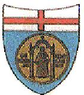
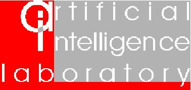

|
V@PSI stands for Verifica Automatica di Protocolli di Sicurezza per Internet.
V@PSI aims to develop a platform based on a variety of techniques that will allow industry and standardization experts to automatically validate or detect errors on a large collection of practically relevant, Internet protocols. In this website you will find all relevant informations about the current research activities carried out in the V@PSI project. |
|   | Artificial Intelligence Laboratory, DIST, University of Genova, Italy |
| Department of Informatics and Telecommunication (DIT), Faculty of Science of University of Trento, Italy | |
| Dipartimento di Scienze Fisiche, University of Napoli "Federico II", Italy |
|
VA@PSI is a three-years project funded by the Italian Ministry of
Education, University and Research (MIUR) under the FIRB (Fondo
per gli Investimenti della Ricerca di Base) Programme, as
RBAU01P5SS.
|
|
| Please use the left frame to navigate the website and to contact us. |